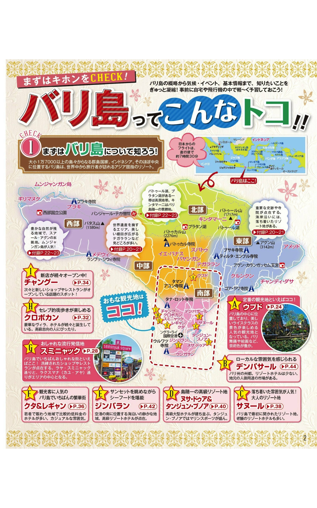

神々の島。寺院・棚田・ビーチ・ナイトライフが1つの島に凝縮。
エリアで雰囲気が全然違う（クタ＝にぎやか、ウブド＝自然、スミニャック＝おしゃれ）
✅ メリット・デメリット
👍 メリット
- 直行便あり（ガルーダ等・約7時間）。費用を抑えるならLCC乗継便も選択肢（SIN・MNL経由・約12〜17時間）
- 8月は乾季でベストシーズン
- 食事が安くて多様（ワルン〜おしゃれレストランまで）
- エリアで旅のスタイルを選べる（観光・自然・リゾート）
- ナイトライフが充実（スミニャック・クタ）
👎 デメリット
- 観光地化が進み、人気エリアは混雑しやすい
- バイク事故に注意（交通マナーが独特）
- 物売りやボッタクリに注意が必要
🗺️ 位置関係
日本から直行便で約7時間。首都ジャカルタとは別の島。
南部（クタ・スミニャック・ヌサドゥア）が観光の中心、北部（ウブド）が自然・文化エリア。
🗺️ Google Maps で見る →


💴 予算の目安（1人あたり・3泊4日）
| 項目 | 福岡発（乗継便のみ） | 関東発（成田・羽田） | 所要時間目安 |
|---|---|---|---|
| ✈️ 航空券・直行便（往復・1人） | 直行便なし | 約17万円〜（ガルーダ等）▶ 所要約7.5時間 | 約7.5時間 |
| ✈️ 航空券・LCC乗継（往復・1人） | 約9〜12万円（目安）▶ 乗継込み約14〜20時間 | 約9.3〜10万円（スクート・SIN経由等）▶ 乗継込み約12〜17時間 | 乗継込み約12〜20時間 |
| 🏨 宿泊（1泊・1室あたり・中級4つ星） | 8,500〜13,000円 | 8,500〜13,000円 | — |
| 🏨 宿泊（3泊合計・1室あたり） | 25,500〜39,000円 | 25,500〜39,000円 | — |
| 🏨 宿泊（3泊合計・1人あたり・4名1室想定） | 約6,400〜9,750円 | 約6,400〜9,750円 | — |
| 🍽️ 食費（3泊4日・1人） | 約4,500〜12,000円 | 約4,500〜12,000円 | — |
| 🛕 観光・アクティビティ（全日程・1人） | 5,000〜15,000円 | 5,000〜15,000円 | — |
| 🚕 現地交通（全日程・1人） | 3,000〜6,000円 | 3,000〜6,000円 | — |
| 合計目安（1人・LCC乗継・中級ホテル） | 約11〜16万円 | 約11〜14.5万円 | — |
※ 航空券は2026年8月Skyscanner調査（8/17-20・8/17-21）。直行便（ガルーダ）¥167,000〜169,000、LCC乗継最安はスクート（SIN経由）¥93,355〜98,855。乗継便は12〜17時間かかる場合あり。宿泊費は2026年8月楽天トラベル調査（バリ島）。海外ホテルは「1室あたり料金」が基本（日本の「1人あたり」と異なる）。 Booking.com・Agoda等で表示される金額は何人泊まっても同じ1室の値段。4名で1室（ヴィラ等）を使えば1人あたり÷4になりコスパ大幅UP。室数が増えると1人あたり金額も増える。福岡発は直行便なし・乗継便のみで関東発より割高になる場合あり。
🏖️ バリ島とは

- インドネシアのリゾートアイランド。ヒンドゥー文化が残る「神々の島」
- 島内でエリアごとに雰囲気がガラリと変わるのが最大の特徴
- クタ・レギャン： 賑やかなビーチ・ショッピング・ナイトライフ
- スミニャック： おしゃれなカフェ・バー・ブティックが並ぶ高感度エリア
- ウブド： 棚田・寺院・伝統舞踊。自然と文化を楽しむエリア
- ヌサドゥア： 高級リゾートホテルが集まる静かなエリア
- ウルワトゥ： 断崖絶壁の寺院と美しいサンセットで有名
🛕 観光スポット

海の岩礁に建つバリ島のシンボル。夕陽の名所。
画像を見る →
聖なる泉が湧き出る寺院。ヒンドゥー教徒が沐浴で清める場所。ウブド近郊。
画像を見る →
バリ最大・最高位の母寺院。アグン山中腹、標高約1000mに位置するユネスコ候補地。
画像を見る →


🌊 ビーチ・リゾート

🏄 アクティビティ


🌙 夜の過ごし方


🍽️ 食事
🛒 市場・ビーチクラブ・バー

デンパサール。夜になるとバビグリン・サテなどB級グルメ屋台がずらり。煙と香りが立ち込め地元の人々で深夜まで賑わう。観光地化されていないリアルなバリの熱気。
画像を見る →スミニャック・ペティテンゲットビーチのビーチクラブ。ボヘミアン系のスローライフがテーマ。プール・デイベッド・海が一体。地元在住者にも人気の落ち着いた雰囲気。
画像を見る →
ジンバランの石灰岩の崖の上14mに立つ絶景バー。インド洋と夕日を望む世界的に有名なサンセットスポット。AYANAリゾート内。要予約。
画像を見る →🏨 宿泊のおすすめ
📍 エリア別おすすめ

高級リゾートエリア
高級リゾートが集まる静かなエリア。ゆっくりしたい人向け。1泊2〜4万円（2名合計）

おしゃれ・ナイトライフエリア
ブティックホテルが多い。観光とナイトライフを両立したい人向け。1泊1.5〜3万円（2名合計）

空港近く・賑やかエリア
空港に近くアクセス良好。予算重視の選択肢も多い。1泊1〜2万円（2名合計）

自然・文化エリア
自然に囲まれたヴィラや棚田ビューの宿が充実。1泊1.5〜3万円（2名合計）
🏨 ピックアップホテル（コスパ重視）

クタ・レギャン
レギャン通り近く。朝食付き4,000円台〜。ビーチへのアクセス良好。1泊4,000〜8,000円（1室あたり目安）

ウブド
棚田・渓谷ビューの4つ星リゾート。スパ・プール完備。1泊1〜1.5万円（1室あたり目安）

サヌール
プール付きヴィラがコスパ良し。ダイビング・シュノーケル拠点に近い。1泊8,000〜1.5万円（1室あたり目安）